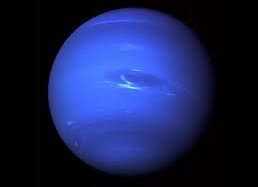

Главная

Колонизация планет Cолнечной системы и их спутников |
||||||||||||||||||||||||||||||||||||||
|
Нептун Параметры:
Нептун - планета, по многим параметрам похожая на Уран. Есть два фактора, делающие более сложным его исследование и освоение: он в 2 раза дальше от Солнца, чем Уран, и его атмосфера неспокойнее. Первый фактор при наличии ядерных двигателей и долговременных систем жизнеобеспечения не критичен. Хотя, конечно, Уран будет освоен гораздо раньше Нептуна. Видимо, сюда, на окраину Солнечной системы человечество доберётся очень нескоро - в лучшем случае, лет через 200 или 300, а, может быть, через многие столетия... А вот вторая проблема - посерьёзнее. На Нептуне дуют самые мощные ветры в Солнечной системе (до 500 м/с) - и, притом, трудно предсказуемые. Но, если учесть развитие техники через 200 лет, летающая обитаемая база на Нептуне вполне возможна. Главное - быстрая и одновременно мощная система маневрирования (основанная на винтах и, возможно, реактивных двигателях), упреждающая порывы ветра. Также тут будут работать проекты постройки «парящих» городов. Но наземная база – очень трудно осуществимый проект, т.к. у этой планеты нет твердой поверхности. Однако для всех газовых титанов существует единый проект, в ходе которого планируется нагреть эти космические тела до огромной температуры (порядка 20000К), чтобы выпарить весь водород и другой газ на их поверхности и добраться до твердого центра, где и планируется строить наземную обитаемую базу. Также планируется колонизировать и спутники Нептуна. Спутники Нептуна — естественные спутники планеты Нептун. В настоящее время известно 14 таких спутников. Наиболее привлекательный для колонизации из них – Тритон – крупнейший спутник Нептуна, седьмой по величине спутник Солнечной системы и единственный крупный спутник Солнечной системы с ретроградным движением (противоположно всем) по орбите. Из-за ретроградного движения и схожести состава с Плутоном считается захваченным из пояса Койпера.
Колонизация ТритонаТритон - один из самых загадочных миров Солнечной системы. В этом ледяном мире есть атмосфера, облака, азотные гейзеры и сложные геологические процессы. Его исследование очень интересно с научной точки зрения. Да вот только проблема базы на Тритоне ещё серьёзнее проблемы подводной лодки на Титане. Дело в том, что обитаемая база будет очень "тёплой", а отвод тепла при такой хилой атмосфере возможен только через грунт. То есть, база будет растапливать грунт и проваливаться под землю, вызывая при этом мощные выбросы газа в атмосферу, с непредсказуемыми последствиями для климата. Поэтому разумно не делать на Тритоне стационарную базу, а исследовать его "с воздуха" летающими аппаратами с реактивными двигателями. Для этого также планируется создание орбитальной базы на орбите искусственного спутника Тритона, которая должна будет включать в свои функции:
В качестве орбитальной базы может выступать одна-две крупные орбитальные станции и группировка специализированных спутников. Колония, размещённая на поверхности Тритона, должна иметь самостоятельную энергетическую базу, например, мощную ядерную или термоядерную энергетику. Предположительно с развитием крупной энергетики на Тритоне, и использования его криогенной поверхности в цикле энергопроизводства в качестве «холодильника» постепенно будет разогревать поверхность этого небесного тела и усилит толщину его азотной атмосферы. Некоторый нагрев атмосферы (порядка 3-5К) позволит значительно уменьшить альбедо Тритона и соответственно улучшить поглощение скудной радиации Солнца. В тоже время достаточно интересно было бы рассмотреть и собственные природные энергетические ресурсы Тритона. О химическом составе этого небесного тела ещё мало известно, однако предполагается наличие огромного количества ресурсов энергетического неядерного сырья. В перспективе Тритон может обладать значительными ресурсами замороженного в составе смесей с метаном и азотом ацетилена, и последний может быть использован в энергетическом цикле. Помимо этого, на Тритоне может быть произведено использование и солнечной энергии, хотя интенсивность её там очень мала. Сверхнизкие температуры Тритона также весьма благоприятны для эксплуатации в энергетическом секторе сверхпроводимости (сверхпроводящие накопители энергии, ЛЭП). Так, например, сверхчистый алюминий, вероятно имеющийся в больших количествах в составе алюмосиликатов на Тритоне, в низкотемпературных погодных условиях Тритона позволяет передавать в сотни раз больший объём электроэнергии чем в температурных условиях на Земле. Транспорт тритонианских поселений безусловно возможен только наземный (поверхностный), и основным источником энергии в нём будет играть электроэнергия. Сверхпроводящий монорельсовый, и на «магнитной подушке» транспорт поселений сможет обладать возможностью как сверхскоростного перемещения людей и грузов, так и обеспечивать громадные объёмы перевозки вследствие невысокой силы тяжести. Транспортировка электроэнергии на Тритоне может быть обеспечена с помощью относительно мало металлоёмких сверхпроводящих ЛЭП. Трубопроводный транспорт также может иметь при необходимости широкое развитие, в том числе при использовании жидкого азота в энергетическом цикле, переброски водорода или гелия. Плюсы и минусы колонизации ТритонаСовершенно очевидно, что «отогреть» Тритон с помощью искусственно созданного парникового эффекта не удастся, подобно тому, как предполагается поступить с природными условиями на Марсе за счёт интенсивного терраформирования. С другой стороны, большая удалённость Тритона от Земли сильно затрудняет наладку скоростного грузопотока, а удалённость его от Солнца почти исключает использования солнечной энергии на его поверхности в качестве источника энергии. НО! Тритон как постоянная база для посадки и старта космических кораблей имеет благоприятные условия. На поверхности этого небесного тела имеются огромные запасы воды и углеводородов, а сила тяжести не очень велика. Наличие у Тритона невысокой силы тяжести в сочетании с особенностями орбитального движения, и близостью Нептуна, позволяет транспортным кораблям осуществлять использование пертурбационных манёвров для разгона и торможения. Использование гравитационного поля Нептуна в наилучших условиях позволяет осуществлять добавочный разгон космических аппаратов на 16,73 км/сек. ВыводыКолонизация системы Нептуна является делом далёкого будущего в связи с её большой удалённостью. Сам Нептун является газовым гигантом, что затрудняет его колонизацию, так как у него нет твёрдой поверхности. Колонизация же его спутников — задача более осуществимая, однако не лишена и недостатков. Все спутники изучены очень плохо, и об их геологии практически ничего не известно. Наиболее перспективен Тритон, крупнейший и единственный его планетоподобный спутник. Однако его гравитация очень слабая, что создаст некоторые трудности при колонизации. Хотя Тритон изучен лучше, чем другие спутники Нептуна, информации о нём собрано также недостаточно. |

Нептун 
Тритон 
|
|||||||||||||||||||||||||||||||||||||

© Сайт проекта колонизации планет Солнечной системы 2020 -
|
||||||||||||||||||||||||||||||||||||||